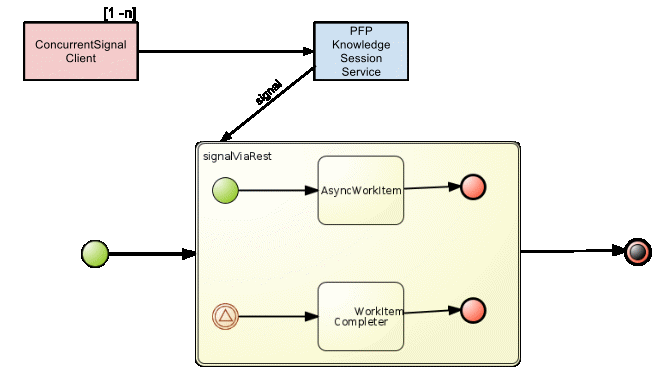

purpose:
- demonstrate ability of PFP's org.jboss.processFlow.knowledgeService.SessionPerPInstanceBean to synchronize concurrent events on the same process instance
- without the additional pessimistic lock provided by PFP's SessionPerPInstanceBean on a process instance, the jbpm5 process engine would attempt to concurrently write to that same process instance.
- subsequently, OptimisticLockExceptions would be thrown.

usage:
ant deploy
ant
NOTES:
- concurrentSignal client invokes PFP kSessionProxy to start a single process instance
- concurrentSignal client then spawns multiple threads of itself and concurrently invokes the PFP kSessionProxy to signal on the single process instance
- com.example.workItem.WorkItemCompleter is a custom service task
- WorkItemCompleter modifies variables on the same process instance
- it never completes the async workItem ... so don't expect the process instance to ever complete